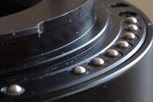
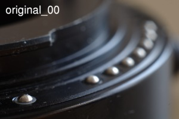
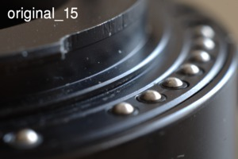
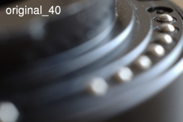
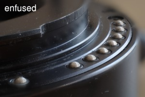

Focus Stacking
Makrófotózás során az egyik visszatérő probléma a túl kicsi mélységélesség, vagyis az, hogy még a legkisebb rekeszt választva sem érjük el, hogy az egész tárgy amit lefényképezünk éles legyen.
Példaként egy közgyűrűt fényképeztem le (ez nem túl látványos, viszont témába vág) olyan szögből, ahol a közgyűrű érintkezői eltérő távolságban vannak a film (szenzor) síkjától.
Az objektíven elérhető legszűkebb rekeszt (22) választva is látszik a következő képen ( különösen ha rákattintunk és nagyobb méretben kinyitjuk ), hogy bár a középső érintkezők élesek, a hozzánk túl közel, vagy túl távol esők életlenek.
{kind=link}
Bár a képeket elnézve úgy tűnhet, hogy a lefényképezett közgyűrű ütött-kopott és szörnyű állapotban van, valójában egy teljesen jól működő darabról van szó, a kisebb karcok rajta nem befolyásolják a működését.
A probléma egyik lehetséges megoldása a focus stacking (ha valaki tud erre szép magyar kifejezést, kérem írja meg), amikor több fényképet készítünk, olyan módon, hogy a fényképeken a tárgy különböző részei élesek, majd egy szoftver segítségével a fényképeken található éles részeket egyetlen fényképben egyesítjük.
Technikai háttér
A fényképezés során egy alapobjektívet (SMC Pentax-A 1:2 50mm) és 56mm vastag közgyűrűt (a közgyűrűsor fényképen nem szereplő másik két elemét) használtam, ezzel kb. 1.2:1 nagyítás érhető el. A leírtak természetesen ettől lényegében függetlenek, a módszer alkalmazható akkor is ha fordítógyűrűt, makróobjektívet használunk.
Összesen 45 fényképet készítettem. A fényképezés során a következőket igyekeztem betartani:
- Állvány használata kötelező.
- Lehetőleg teljesen azonos körülmények (pl. fényviszonyok) között készüljenek a képek.
- Azonos beállításokkal ( ISO, rekesz, idő, fehéregyensúly, ... ) készüljenek a képek.
- A képek a következő beállításokkal készültek: ISO: 200, rekesz: F8, idő: 1/4 mp
- Az előző sorban szereplő beállításoknál a rekesz tűnhet meglepetésnek, hiszen makrófotózásnál többnyire a lehető legszűkebb rekeszt szoktuk választani. Mivel most fényképsorozatot készítünk, nem feltétlenül kell ehhez ragaszkodni, választhatunk más rekeszértéket is. Azért döntöttem F8 mellett, mert az objektív F8 rekesznél jobb minőséget ad mint F22-nél. (Illene persze ezt alaposabban tesztelni.)
- A fókusz finom változását nem a fókuszgyűrűvel érhetjük el, hanem azzal, hogy a tárgy távolságát fokozatosan változtatjuk. Ezt leginkább egy makrosín segítségével érhetjük el.
- A fényképek elkészítése során a lehető legkevésbé szabad az állványt/fényképezőgépet mozgatni. Laptopról vezérelve a fényképezőgépet (én <önreklám>pkTriggerCord</önreklám> programot használtam) ennek csökkenteni lehet az esélyét. A makrosín miatt persze szükség van óvatos mozgatásra (mondjuk bizonyára létezik számítógépről vezérelhető makrosín is).
- A készítendő fényképek számát a mélységélesség határozza meg. Fontos, hogy a tárgy minden része legalább 1 képen éles legyen, hiszen ha egy pont mindenhol életlen, akkor a végeredményen is az lesz. Valójában ennél sűrűbben kell a képeket készíteni, hiszen az egymás melletti képek illesztéséhez az kell, hogy kellően nagy terület _mindkét_ képen éles legyen.
- Bár az objektív és a szenzor tisztán tartása amúgy is ajánlott (és kissé reménytelen), itt különösen fontos. A képek kissé eltérő nagyítása miatt egy kellően zavaró folt több példányban is megjelenik a végső képen.
Mind a 45 képet itt nem mutatom meg, 3 jellemző kép:
  {kind=link}
{kind=link}
{kind=link}
Képek illesztése
Ha megvizsgáljuk az elkészített képeket, akkor észrevehetjük, hogy a lefényképezett tárgy "mozog", nem ugyanazon a helyen van a fényképeken. Ahogy egyre közelebb mozdítjuk a fényképezőgépet egyre szűkebb a kivágás. Vagyis először is a képeket kell egymáshoz illeszteni.
Az illesztést
az align_image_stack
program végzi. A program bemenete (a példában kozgyuru_* fájlok) a
fényképsorozat amit készítettünk,
kimenete (a példában ais_kozgyuru*.tif) szintén egy fényképsorozat
(ugyanannyi képből), ahol a
képek kismértékben el vannak mozdítva, át vannak méretezve úgy, hogy
illeszkedjenek egymásra.
Elméletben a következő parancsra van szükségünk:
align_image_stack -m -a ais_kozgyuru_ kozgyuru*.png
a gyakorlatban viszont ezzel nem mindig sikerül az illesztés
(én feh
-Fd ais*.tif segítségével ellenőrzöm ezt) ezért ehelyett ezt
használtam:
align_image_stack -c 16 -s 2 -m -a ais_kozgyuru_ kozgyuru*.png
Némi magyarázat a paraméterekről:
-m: A kapcsoló hatására a program feltételezi, hogy kissé eltérő nagyítással készültek a képek, és az első képet leszámítva a többit átméretezi. Esetünkben pont erről van szó, ezért focus stackingnél szinte mindig érdemes a kapcsolót használni. Ha nem sikerül az illesztés, akkor persze megpróbálhatjuk a kapcsoló nélkül is.-c 16: A képek illesztéséhez használt kontrollpontok számát módosíthatjuk a paraméterrel. Az alapértelmezés 8, időnként nagyobb értéket megadva jobban illeszkednek a képek.-s 2: Megadhatjuk azt, mennyire csökkentse a program a képek méretét az illesztés során. Az itt megadott paraméter (scale) alapján a program 2^scale arányban csökkenti a méretet. A paraméter alapértelmezett értéke 1, vagyis alapesetben felére csökkenti. Esetünkben a paraméter 2, vagyis negyedére csökkentjük. Úgy vettem észre a paraméter főleg akkor segít, ha a képeknél elég sok az életlen rész.
Biztos van tudományosabb módszer is, én a megfelelő paramétereket sok-sok próbálkozással próbáltam megtalálni.
A következő három kép megegyezik a korábban mutatott képekkel, de ha az egeret a képek fölé visszuk, átvált az átméretezett verzióra (az első képnél nincs átméretezés):
{kind=link}
{kind=link}
{kind=link}
Képek egyesítése
Ha megvan az egymáshoz illesztett képsorozat, akkor egyesíteni kell a képeket, vagyis egy olyan képet készíteni, ami minden képből csak az éles részeket használja, az életleneket nem. Ehhez az enfuse programot használom.
A továbbiakban az enfuse 4.0-val foglalkozom, most (2011. február) még elég sok Linux disztribúcióban csak az enfuse 3.2 érhető el. Érdemes frissíteni. Az általam használt kapcsolók egy része nem érhető el enfuse 3.2-nél, másik részét pedig átnevezték.
Itt is van egy elméletben használható parancs:
enfuse -o output.tif --exposure-weight=0 --saturation-weight=0 --contrast-weight=1 --hard-mask ais_kozgyuru_*.tif
enfuse elég sok szempontot figyelembe tud venni amikor eldönti, melyik input fájlból vegye a kép megfelelő részletét. Focus stackingnél a kontraszt alapján kell dönteni, ezért állítjuk be ennek a súlyát 100%-ra, és a másik két szempont súlyát 0%-ra.
Ezen kívül még szükségünk van a --hard-mask
kapcsolóra, mert enélkül túl lágy lenne a kép.
A konkrét példában ezt a parancsot használtam:
enfuse -o output.tif --contrast-edge-scale=0.3 --gray-projector=l-star
--exposure-weight=0 --saturation-weight=0 --contrast-weight=1 --hard-mask ais_kozgyuru_*.tif
Enfuse dokumentációjában olvashatunk a paraméterek jelentéséről, és arról milyen értékekkel érdemes tesztelgetni. A paramétereket itt is sok teszt alapján próbáltam meghatározni.
A kész képet itt láthatjuk:
{kind=link}
Jól látszik, hogy a kép széle ( különösen a teteje és a jobb oldala ) életlen, hiszen ez a rész csak az első képen szerepel a többi képen (ahol esetleg éles lenne) már nem. Ezt a részt érdemes levágni, én csak azért hagytam a képen, hogy meg tudjam mutatni.
Demonstrációs videó
A következő videó megmutaja az eredeti képeket, az illesztett képeket, végül a végső eredményt. A képek egymáshoz viszonyított elhelyezkedése sokkal jobban látszik a videón, mintha külön-külön vizsgálnánk a képeket: